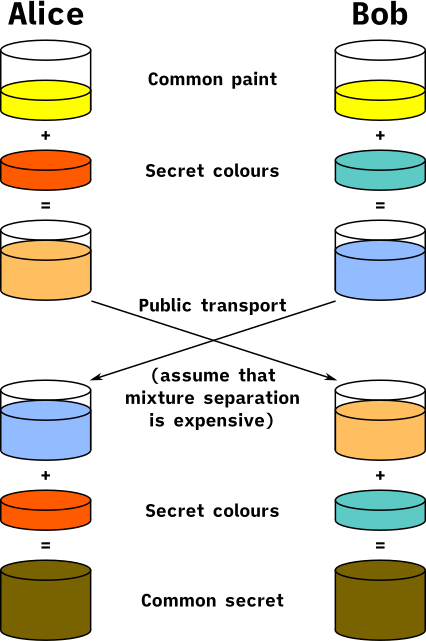

TLS 1.3 from scratch, and why hand-written crypto is the dangerous part

{kind=link}
The kernel speaks TLS 1.3 using its own SHA-256 and SHA-384, HMAC, HKDF, AES, ChaCha20-Poly1305, X25519, RSA and ECDSA, and validates certificate chains against a root bundle exported from the host's store at build time. One cipher suite and one key exchange group, because TLS 1.3 permits exactly that and every additional option is another code path that never gets exercised.
Primitives chosen for checkability
The selections were made for how hard they are to get quietly wrong, rather than for speed:
- ChaCha20-Poly1305 rather than AES-GCM, because it has no key-dependent table lookups and therefore no cache-timing side channel to reason about. Constant-time AES in software is achievable and it is not achievable by accident.
- X25519 rather than a NIST curve, because it needs no point validation, has no invalid-curve attack surface, and has substantially fewer ways to be subtly incorrect.

{kind=link}
Every primitive is checked against published RFC and FIPS test vectors at every boot, eleven vector sets in total, and the boot log prints a pass or fail line for each one.
An ECDSA break that sat in plain sight
That self-test output is easy to scroll past, and scrolling past it cost a full debugging cycle. A broken ECDSA implementation was printing FAIL in the crypto block the entire time, while the boot log was being sliced down to look at something else entirely. The test worked. The reader did not.
What validation actually checks
Four things, and a certificate is rejected if any of them fails. The chain: each certificate verified with the public key of the next one up. The root: identified by SHA-256 of its full DER encoding against a built-in list, which is fingerprint pinning, so there is no name canonicalisation to get wrong. The dates, against the CMOS clock. And the name, per RFC 6125, from subjectAltName only, with wildcards allowed solely in the leftmost label and dNSName entries kept strictly apart from iPAddress ones.
There is a fifth check that is easy to overlook and is the one that matters most: CertificateVerify, where the server signs the handshake transcript with the key in its certificate. That is the step proving the party at the other end of this connection holds the private key. Without it, an attacker can replay any certificate they have ever seen.
The DER parser in front of all this is deliberately strict, because it reads bytes chosen by whoever we are talking to before we know who that is, which makes it the most hostile input in the system. Every length is checked against the buffer, indefinite-length encodings are refused outright, nesting depth is bounded, and nothing is copied on the strength of a length field alone. Two parser bugs are recorded in the source: expect(tag) must not consume input on a mismatch, and "try for the value, skip if that failed" throws the value away when the optional field it was looking for is simply absent.
Jacobian coordinates, and a trap
ECDSA works in Jacobian coordinates because affine ones cost a modular inversion per point operation, and a modular inversion is a full modular exponentiation. For P-384 that came to roughly 460,000 allocating multiplications per signature, which exhausted the heap instead of merely being slow.
The trap in the replacement: the inversion routine takes and returns ordinary values, so handing it something already in Montgomery form computes the wrong answer and says nothing. There is a wrapper that converts correctly, and using it is not optional. This is the same shape of failure as the model bugs elsewhere in this wiki, a representation mismatch that produces well-formed output, which is why the boot vectors exist.
What is still not safe
- Validation reports, and does not enforce. The
httpscommand prints what was established and shows the body either way, which is a deliberate choice for a system whose purpose is inspection and the exact opposite of what a browser should do. A caller that cares has to check the result itself. - There is no revocation checking of any kind, no CRL and no OCSP, so a certificate withdrawn by its issuer is accepted here until it expires.
- Key material comes from the timestamp counter and not from
RDRAND. A counter is not a random number generator. This is a genuine weakness and it is on the list. - Path length constraints and key usage bits are parsed, but only basicConstraints is enforced.
Writing these down is the point. A system that claimed to be secure here would be worse than one that states precisely where it is not, because the first invites someone to rely on it.